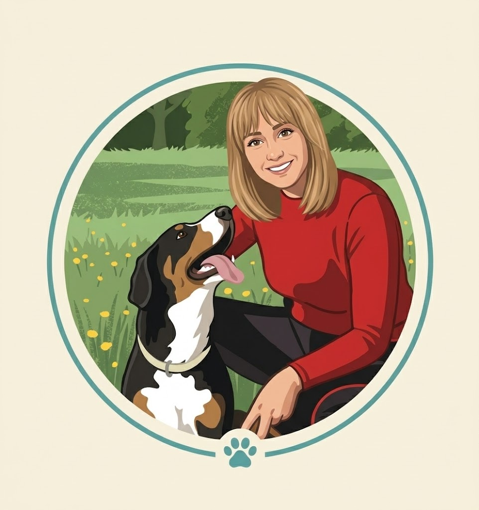

Pauline
Renard
Éducatrice &
comportementaliste canin
Tu rêves d’un quotidien serein avec ton toutou ?
Réserve ton bilan !
Lyon & alentours
Pauline Renard
éducation canine bienveillante
06 45 81 64 19
paulinerenard-educateurcanin.fr
@pauline_educ_oslo
Réserve ici